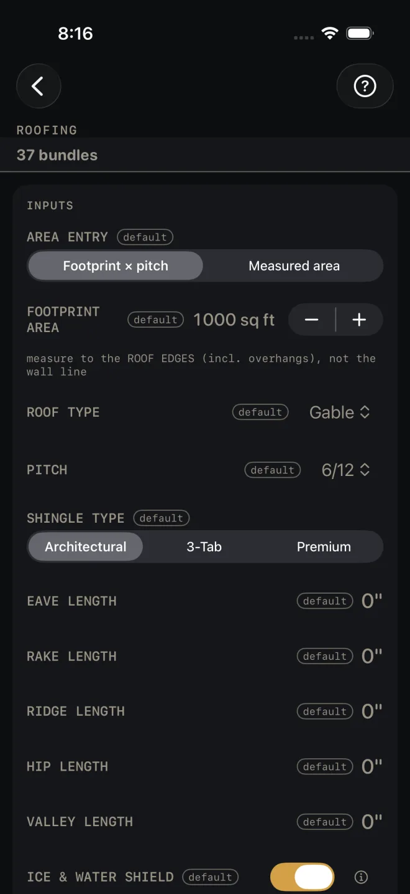
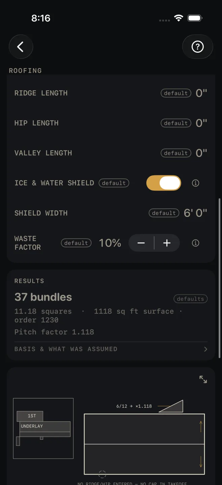
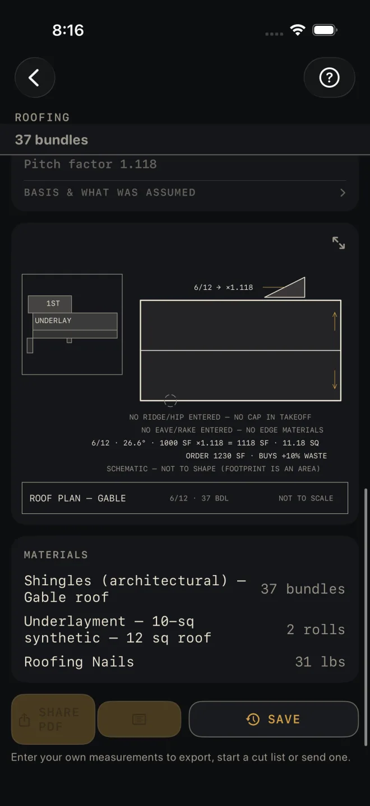

Roofing
What it's for
Takes off a shingle roof. From the roof area and pitch you get bundles, squares, underlayment rolls and nails. Enter the eave, rake, ridge, hip and valley lengths and it adds starter, drip edge, cap, valley flashing and ice and water shield. You also get a roof plan drawing and a material list. It is an order takeoff. It makes no code check.
Step by step
The example is the screen as it opens: a 1000 sq ft footprint, gable roof, 6/12 pitch, architectural shingles, no edge lengths entered, 10% waste.

1 2 3 4 5- Pick AREA ENTRY. Footprint × pitch works the roof surface out from the plan area and one pitch. Measured area takes the true surface you taped plane by plane. Use Measured area for a roof with more than one pitch.
- In Footprint mode, enter FOOTPRINT AREA in square feet. Measure to the roof edges, overhangs included, not to the wall line. The screen says so under the row. Tap the number to type it, or nudge it 50 sq ft at a time with − and +. In Measured mode this row is replaced by MEASURED ROOF AREA.
- Pick ROOF TYPE: Gable, Hip, Shed, Mansard or Gambrel. Then PITCH, from 0/12 to 24/12. In Measured mode the pitch row stays on screen with the note pitch is NOT applied in measured mode.
- Pick SHINGLE TYPE: Architectural, 3-Tab or Premium. It sets the bundles per square.
- Enter the edge lengths. Each one is the total for the whole roof, and each buys its own materials: EAVE LENGTH and RAKE LENGTH buy starter strip and drip edge; RIDGE LENGTH and HIP LENGTH buy cap; VALLEY LENGTH buys valley flashing. On a gable, the eave length is both eaves added together, and the rake length is all four rakes measured up the slope. Leave a length at 0" and that material is left off the list.
- Leave ICE & WATER SHIELD on to buy it along the eaves. SHIELD WIDTH shows while it is on: how far up the roof from the eave edge the membrane runs. The rolls are figured from the eave length, so with no eave length there is no shield on the list.
- Set WASTE FACTOR. It is added to the order quantities only. The surface area and squares in the results stay true to the tape.
Reading the results

6 7 8- The headline is shingle bundles to order. On the defaults it reads 37 bundles. It is figured from the order area, and Hip, Gambrel and Mansard roofs add a cut-waste allowance on top. The shingle row in the material list names the allowance when there is one.
- Squares, surface, order. On the defaults: 11.18 squares · 1118 sq ft surface · order 1230. Surface is the real roof area with no waste. Order is the surface plus your waste factor. Squares are figured from the surface, not the order.
- Pitch factor is what the footprint was multiplied by to get the surface, here 1.118 for 6/12. In Measured mode this line reads Measured area — pitch factor not applied.
- The drawing is a roof plan with an eave detail in the corner. Pinch to zoom, drag to pan, double-tap to reset, and use the expand button for full screen. See Drawings.
- The notes under the drawing are where you check what was assumed. BASIS & WHAT WAS ASSUMED states the yields behind them: bundles per square, the extra cut waste for hips, gambrels and mansards, and the roll and bundle coverages for underlayment, ice shield, cap, starter and flashing. The notes show the area sum, here 1000 SF ×1.118 = 1118 SF · 11.18 SQ, and the order line, ORDER 1230 SF · BUYS +10% WASTE. They also tell you what is missing: NO RIDGE/HIP ENTERED — NO CAP IN TAKEOFF and NO EAVE/RAKE ENTERED — NO EDGE MATERIALS. Enter those lengths in step 5 and the notes clear.
- SCHEMATIC — NOT TO SHAPE means the outline on the plan is a stand-in. A footprint is an area, not a length and a width, so the drawing cannot know the roof's shape. Every number is still right. On a gable or shed roof, enter eave and rake lengths that agree with the footprint and the plan is drawn to shape and dimensioned. On a Mansard or Gambrel it reads 2 PITCHES: USE MEASURED AREA: switch AREA ENTRY to Measured area.
- MATERIALS. On the defaults: shingles, underlayment in rolls, and nails in pounds. The shingle and underlayment rows carry their basis after the dash, such as 10-sq synthetic on the underlayment. The nails row is a bare weight. With edge lengths entered you also get hip and ridge cap, starter strip, drip edge, valley flashing and ice and water shield, each with the length or coverage it was figured on. The cap row tells you to verify the coverage against your cap product.

11 12 13 14Roofing is a Pro calculator. SHARE PDF and SAVE are Pro as
well, a one-time purchase. SHARE PDF and the list button beside it stay grey until you have entered your own
measurements. SAVE stays lit, but until then a tap only answers Enter your job's numbers first
and saves nothing.
Common mistakes
- Measuring the footprint to the wall line. The overhangs are roof too. The screen's own note under FOOTPRINT AREA says to measure to the roof edges.
- Ordering off the list with the edge lengths still at 0". You get shingles, underlayment and nails and nothing else: no cap, no starter, no drip edge, no ice and water shield. Read the notes under the drawing before you order.
- Entering one eave or one rake. The lengths are totals for the whole roof.
- Using Footprint × pitch on a mansard or gambrel. One pitch cannot describe two. Tape the planes and use Measured area.
- Adding waste twice. The order area and every material row already carry WASTE FACTOR. The surface and squares do not, on purpose.
Related
- Roof Rafter — rafter length and the pitch you are roofing
- Hip & Valley — hip and valley lengths
- Siding
- Drawings
- Cut sheets and templates — what SHARE PDF sends
- Saving and history